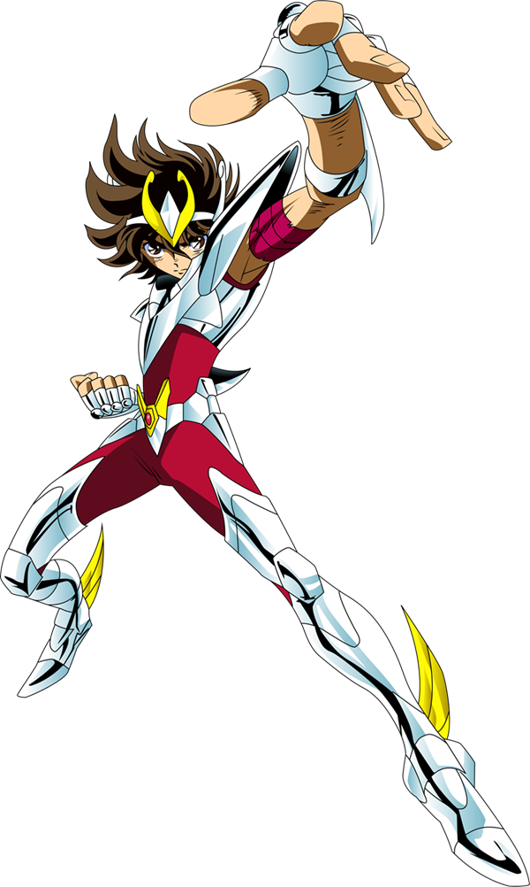

Data and Analytics Professional, Software Developer, Applied AI Graduate Student
I build data products and software tools that help teams measure performance, automate reporting, and generate insights. I focus on clean implementation, clear documentation, and practical results.
I build projects that combine analytics, automation, and software development. This website is an example of clean multi-page HTML structure.
